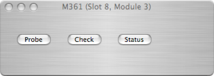
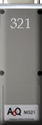

M321 Motor Controller



The M321 module is an intelligent stepper motor controller M-module, based on an MC68332 micro controller. The M321 has four on-board power amplifiers which can drive four phases. The module can drive two 2-phase motors independently or one 4-phase motor. Each controller channel has an associated home sensor input up front and a trigger line on the M-module connector.The MC68322 executes local firmware booted from ROM. The option of downloading firmware into the CPU from ORCA is not currently supported.
The M321 is installed into ORCA by dropping it's icon onto a M-Carrier board and connecting the resulting connection point(s) to stepper motors on the configuration page. The M321 icon can only be dragging onto an M-Carrier Board.
The M321 dialog is simple and only exposes three functions to the user. Please refer to the manual for more details.
Reads the board’s mode, type, and firmware version and prints the result to the status log
Checks the ‘alive’ status of the on-board CPU and prints the result to the status log
Prints the current status of the M321 IRQ word to the status log
All actual motor functions are accessed via the motor dialog.